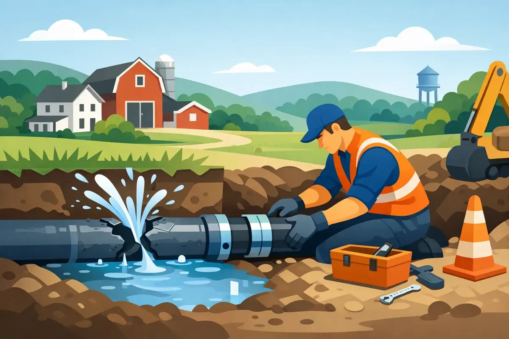

A water line can fail without much warning. One moment, the water pressure seems a little low. The next, there is water spreading across the yard, pooling near the foundation, or soaking a utility room floor. For busted water line repair in Woodbury, TN, quick action can make a major difference in protecting your home, belongings, and peace of mind.
A broken water line is not a problem to watch overnight or attempt to manage with a bucket. Whether the leak is under a slab, behind a wall, in a crawl space, or underground between the meter and your home, the right first steps can limit damage while a trained plumber identifies the source and makes a dependable repair.
What to Do When a Water Line Breaks
Your first priority is to stop the flow of water. If the leak appears to be inside the home, turn off the main water shutoff valve. It is commonly located near the water heater, in a utility area, garage, crawl space, or where the main line enters the house. Every household should know where this valve is before an emergency happens.
If water is collecting near electrical outlets, appliances, or the breaker panel, do not step through standing water. Keep children and pets away from the area and shut off power only if you can do so safely. Move valuables, rugs, and furniture away from the leak when possible, but do not take risks to save property.
For an outdoor break, you may see a wet or unusually green patch of yard, water bubbling up through soil, a sudden drop in water pressure, or water running toward the street. Shut off water at the main valve if you can. Then contact a plumbing professional for help determining whether the break is on your private service line or may involve the utility-side connection.
Signs You May Have a Busted Water Line
Some failures are obvious. Others start small and become expensive before anyone sees the water. A sudden increase in your water bill is one warning sign, especially if your household habits have not changed. You may also hear water moving through pipes when no fixture is running.
Inside the home, watch for damp drywall, bubbling paint, warped flooring, musty odors, warm spots on the floor, or unexplained mold growth. A leak beneath a slab may cause cracks or shifting in flooring over time. In crawl spaces, wet insulation, standing water, and saturated soil deserve prompt attention.
Outside, low pressure at multiple fixtures can point to a damaged main water line. So can discolored water after a break, although rusty or cloudy water may also come from other plumbing issues. A professional inspection separates the guesswork from the facts, helping you avoid repairing the wrong pipe or overlooking a hidden leak.
Why Water Lines Break in Woodbury Homes
Water pipes do not usually fail for just one reason. Age is often part of the picture. Older galvanized pipes can corrode from the inside, narrowing the passage for water and weakening the pipe wall. Copper lines can develop pinhole leaks, while certain older plastic materials may become brittle with age or poor installation conditions.
Ground movement matters for buried lines and slab plumbing. Seasonal moisture changes, settling soil, tree-root activity, and previous excavation can place stress on a pipe or fitting. A shallow outdoor line can also be more vulnerable during freezing weather if it was not installed at the appropriate depth or adequately protected.
High water pressure creates another concern. Pressure that stays too high can stress pipes, valves, appliance hoses, and fixtures throughout the home. A repair may solve the immediate leak, but checking the system pressure can help prevent the next failure. In some cases, a pressure-reducing valve or other corrective work is the wiser long-term investment.
Professional Busted Water Line Repair in Woodbury, TN
The best repair depends on the location, pipe material, condition of the remaining line, and cause of the break. A visible, isolated break may need a carefully fitted section of new pipe and a pressure test. A damaged connection at a fixture, water heater, or shutoff valve may call for replacement of the valve or supply line along with the affected piping.
For hidden or underground leaks, the process begins with locating the problem as accurately as possible. This may involve examining the plumbing layout, checking water pressure, inspecting visible areas, and using leak-detection methods appropriate to the situation. Accurate diagnosis helps reduce unnecessary cutting, digging, and disruption to your property.
A spot repair is often practical when the pipe is otherwise in good condition and the damage is clearly isolated. However, repeated leaks, widespread corrosion, undersized piping, or deteriorating material may make partial or complete repiping the more responsible choice. It costs more upfront, but it can prevent a cycle of emergency calls, damaged finishes, and growing water bills.
After the repair, the line should be tested for leaks and proper operation. If a break affected walls, flooring, insulation, or cabinetry, prompt drying and restoration are just as important as fixing the pipe. Plumbing repair stops the source of the water, but moisture left behind can create future problems.
Do Not Rely on a Temporary Patch
Tape, clamps, sealants, and improvised repairs can sometimes slow a small leak long enough to get help. They are not a dependable answer for a split water line, corroded pipe, or failed fitting under pressure. A patch may conceal the issue while water continues to reach framing, insulation, or the ground beneath your home.
The same caution applies to turning the water back on after a leak seems to have stopped. Water pressure can reopen a crack or expose another weak section nearby. If you have shut off the main supply, leave it off until a qualified technician can assess the line, unless you have clear guidance that it is safe to restore service.
How to Reduce the Risk of Another Break
No home is completely immune to plumbing failures, but a few practical habits can lower the risk. Know where your main shutoff is and make sure it turns freely. Pay attention to unexplained changes in pressure, water bills, and damp areas. Insulate exposed pipes before freezing weather, especially in unheated crawl spaces, garages, and exterior walls.
It also helps to schedule a plumbing inspection when buying an older home, planning a remodel, or noticing recurring leaks. A technician can identify aging supply lines, corroded valves, pressure concerns, and signs that a water line is nearing the end of its service life. For homes that will be vacant, a smart water shutoff valve can add another layer of protection by alerting you to unusual water use and, in some cases, stopping the water automatically.
For landlords and commercial property managers, fast leak response is especially important. A broken line can affect tenants, interrupt operations, damage inventory, and create unsafe conditions. Keeping records of past repairs and arranging preventive maintenance helps make repair decisions based on the condition of the plumbing system rather than the urgency of the latest emergency.
Respectful Help When Water Is Going Where It Should Not
A busted line can leave a family feeling overwhelmed, particularly when it happens after hours or during a busy week. You deserve clear answers about what failed, what the repair involves, and what the next steps may cost. Angle Stop Plumbing brings 31 years of experience, upfront pricing, courteous service, and 24/7 emergency availability to homeowners and property managers who need practical help without added hassle.
If you suspect a broken water line, shut off the water if it is safe to do so and arrange professional service promptly. A timely, well-executed repair protects more than pipes. It helps protect the home and the people who count on it every day.